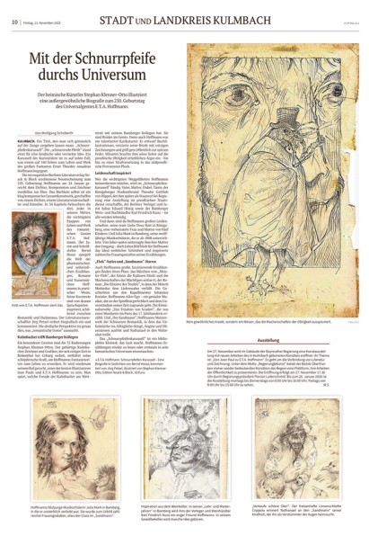
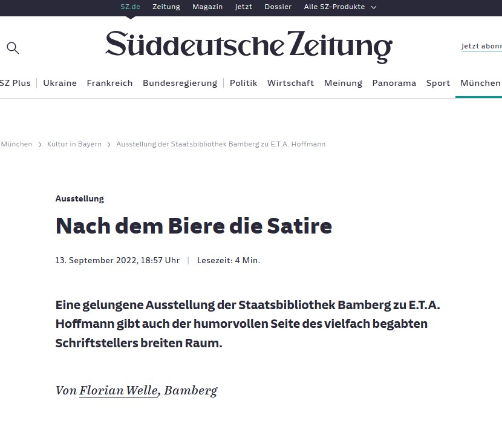
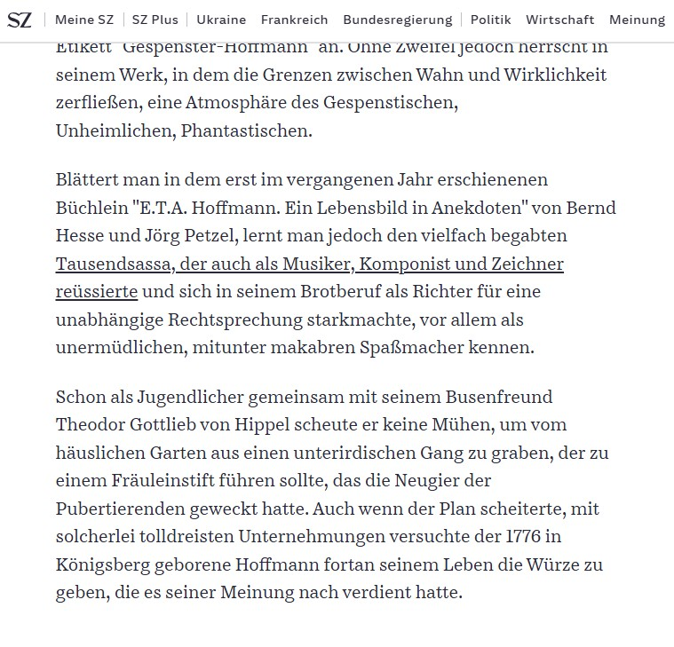
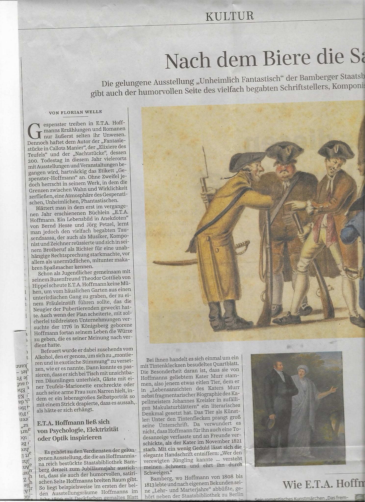
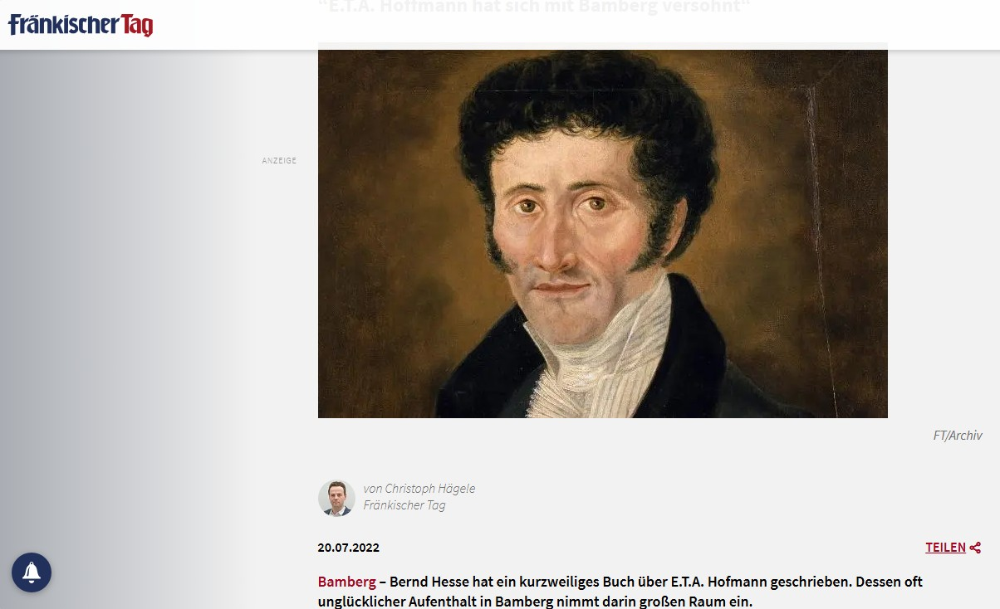
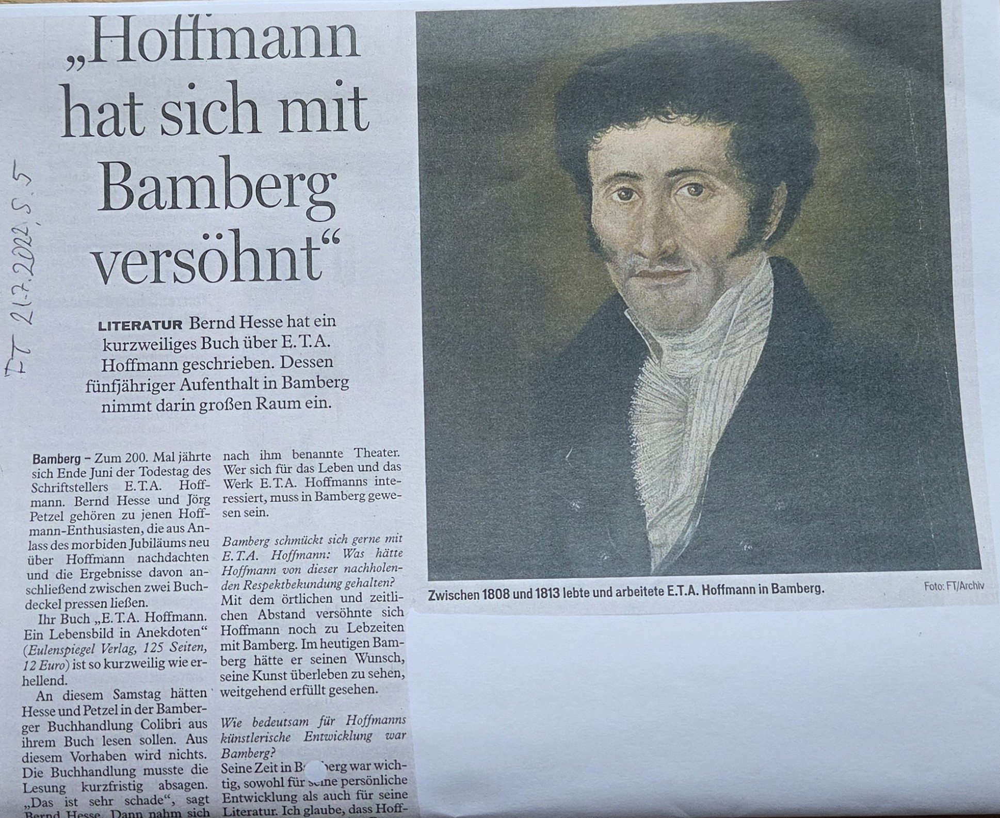
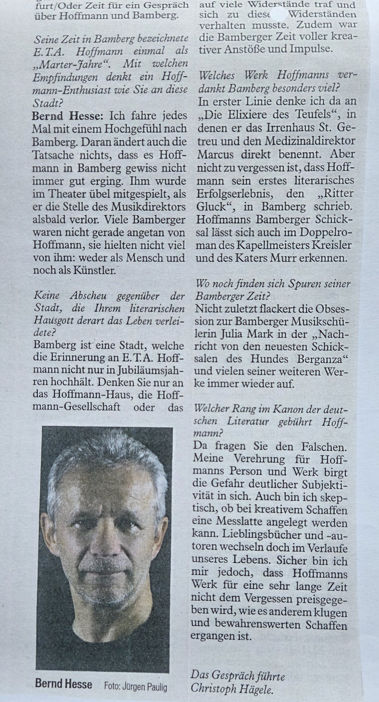

Presse
Presseberichte, Rezensionen und Beiträge über das literarische und literaturwissenschaftliche Schaffen von Bernd Hesse.
Bayerische Staatszeitung – 16. Januar 2026
In der Woche vor dem 250. Geburtstag E.T.A. Hoffmanns berichtet die Bayerische Staatszeitung über das Erscheinen des Künstlerbuches Schnurrpfeifenkarussell, das von Bernd Hesse, Jörg Petzel und Stephan Klenner-Otto gemeinsam gestaltet wurde.

Unter der Überschrift „Im Spiegelkabinett des Unheimlichen“ würdigt der Autor Wolfgang Schoberth das Zusammenwirken der drei Künstler. Die Lyrik von Bernd Hesse spiegelt die Welt des Fantastischen und Unheimlichen in Hoffmanns Werken in poetischer Weise wider.
Über die Texte schreibt er: „Seine Kurztexte sind von dessen [E.T.A. Hoffmanns] Sprachspielen inspiriert, schillernd zwischen Romantik und Dadaismus.“
Gewürdigt werden ebenso die biografischen Erläuterungen von Jörg Petzel und insbesondere die ausdrucksstarken Illustrationen von Stephan Klenner-Otto, die in engem Zusammenhang mit den Gedichten stehen.

Frankenpost – 23. November 2025
Auch die Frankenpost würdigt das Schnurrpfeifenkarussell und findet lobende Worte für dieses besondere Künstlerbuch.
Der Beitrag mit der Überschrift „Mit der Schnurrpfeife durchs Universum“ ist mit vier ausgewählten, für das Buch charakteristischen Zeichnungen von Stephan Klenner-Otto illustriert.

Süddeutsche Zeitung – Nach dem Biere die Satire
Im Zusammenhang mit der Eröffnung der E.T.A.-Hoffmann-Ausstellung in der Staatsbibliothek Bamberg veröffentlichte die Süddeutsche Zeitung am 13. September 2022 den Beitrag Nach dem Biere die Satire von Florian Welle.


Kenntnisreich berichtet Florian Welle in seinem Artikel über das Buch E.T.A. Hoffmann – Ein Lebensbild in Anekdoten von Bernd Hesse und Jörg Petzel. Darin lernt man E.T.A. Hoffmann nicht nur als vielfach begabten „Tausendsassa“ kennen, der sich in seinem Richteramt für eine unabhängige Rechtsprechung starkmachte, sondern auch als „unermüdlichen, mitunter makabren Spaßmacher“.

Fränkischer Tag, 20. Juli 2022 – „Hoffmann hat sich mit Bamberg versöhnt“
Über das gemeinsam mit Jörg Petzel verfasste Buch E.T.A. Hoffmann – Ein Lebensbild in Anekdoten sprach Bernd Hesse mit dem Journalisten Christoph Hägele vom Fränkischen Tag. Das Gespräch erschien am 20. Juli 2022 unter der Überschrift „Hoffmann hat sich mit Bamberg versöhnt“.

Im Mittelpunkt des Gesprächs standen insbesondere die keineswegs unkomplizierten Bamberger Jahre E.T.A. Hoffmanns: der Verlust seiner Stellung als Musikdirektor, seine finanziellen Sorgen und jene bitteren Erfahrungen, die ihn dazu veranlassten, diese Zeit als seine „Lehr- und Marterjahre“ zu bezeichnen.
Gleichwohl konnte Bernd Hesse aufzeigen, dass Hoffmanns literarisches Werk auch eine andere Sicht auf diese Lebensphase eröffnet. So lässt sich durchaus das Resümee ziehen, dass sich Hoffmann schließlich mit Bamberg versöhnt hatte. Heute gehört Bamberg zu den Städten, in denen das literarische und kulturelle Erbe E.T.A. Hoffmanns in besonderer Weise gepflegt und lebendig gehalten wird.
Das Gespräch berührte noch zahlreiche weitere Aspekte von Hoffmanns Leben und Werk. Wie bei Zeitungsinterviews üblich, konnte davon aus Platzgründen allerdings nur ein Ausschnitt veröffentlicht werden.

